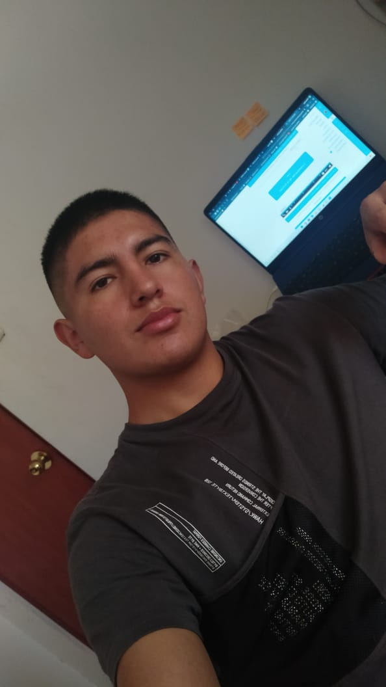

Ribeyro Sayder Quispe Guzmán
- Mi Presentación Personal
- Sobre Mí
- Tecnologías y Lenguajes de Programación
- Formación Profesional
- Idiomas
Mi Presentación Personal
Hola, soy un apasionado del fútbol y la tecnología. Me encanta aprender y trabajar con diferentes tecnologías y lenguajes de programación como Python, Java, JavaScript, CSS y HTML.
Sobre Mí
Aparte de mi interés por el fútbol y la tecnología, también disfruto desarrollando software y resolviendo problemas. Estoy estudiando diseño y desarrollo de software para convertir mi pasión en una carrera.
Tecnologías y Lenguajes de Programación
 |
 |
 |
 |
 |
Formación Profesional
Actualmente, soy estudiante de diseño y desarrollo de software, donde estoy adquiriendo conocimientos y habilidades para convertirme en un desarrollador profesional.
Idiomas
- Español (Avanzado)
- Inglés (Básico)
- Quechua (Básico)